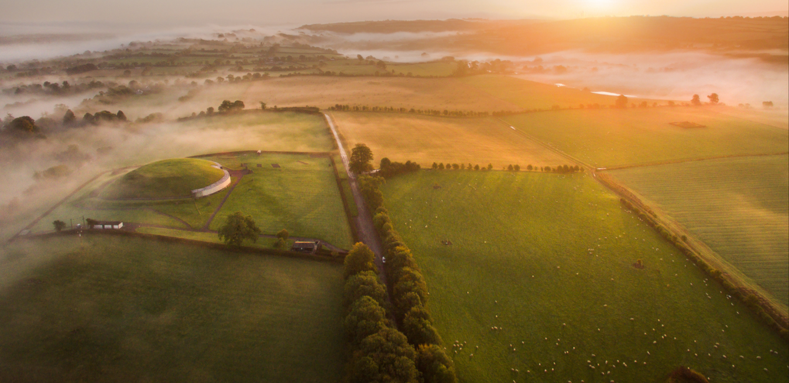
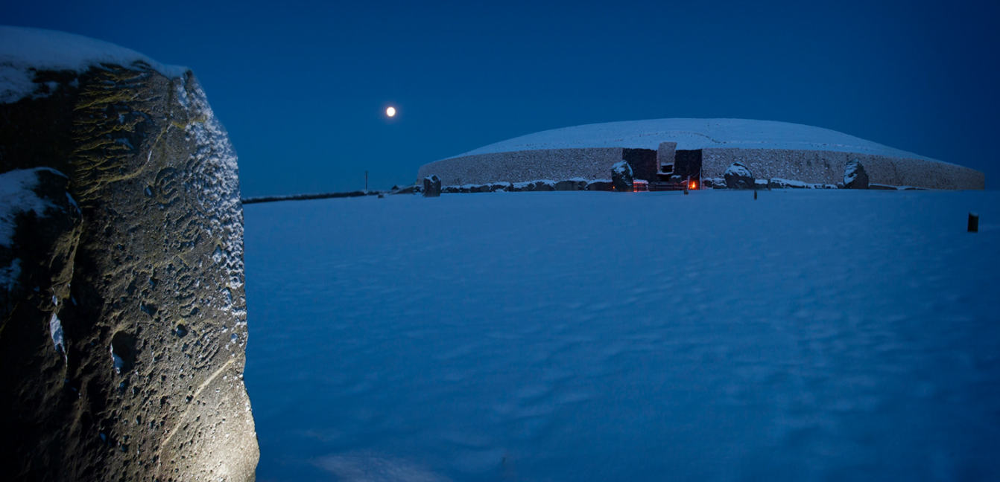
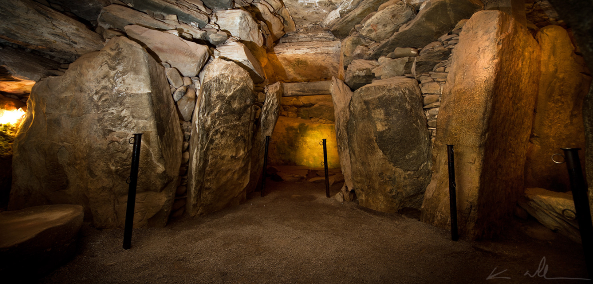

Newgrange
History

Newgrange is an old passage tomb located in the Boyne Valley, Ireland’s Ancient East, in Co. Meath, Ireland. Newgrange was built by a farming community that prospered on the rich lands of Boyne Valley.
The passage tomb is 5200 years old, making it older than the Great Pyramids of Giza.
Newgrange is a large circular mound, 85m in diameter and 13m high with a 19m stone passageway and chambers inside which contains 3 alcoves.
The passage and chamber aligned with the rising sun on the mornings around the winter solstice.
Newgrange is surrounded by 97 large stones called kerbstones, some of which are engraved with striking megalithic art.
Newgrange is classified as a passage tomb by archaeologists, however, Newgrange is now recognised to be much more than that.
It is an ancient temple, a place of astrological, spiritual, religious and ceremonial importance, akin to present day cathedrals.
Neolithic People
Newgrange was built by a farming community that prospered on the rich lands of the Boyne Valley. Knowth and Dowth are similar mounds that together with Newgrange have been designated a World Heritage Site by UNESCO. It has been suggested that the monument could have been built within a space of five years, basing his estimation upon the likely number of local inhabitants during the Neolithic and the amount of time they could have devoted to building it rather than farming. This estimate, however, has been criticised by archaeologists, who believed that it would have taken a minimum of thirty years to build.
Purpose

There have been various debates as to its original purpose.
Many archaeologists believed that the monument had religious significance of some sort or another, either as a place of worship for a "cult of the dead" or for an astronomically-based faith.
An archaeologist Michael O’ Kelly, who led the 1962–1975 excavations at the site, believed that the monument had to be seen in relation to the nearby Knowth and Dowth, and that the building of Newgrange "cannot be regarded as other than the expression of some kind of powerful force or motivation, brought to the extremes of aggrandizement in these three monuments, the cathedrals of the megalithic religion."
O'Kelly believed that Newgrange, alongside the hundreds of other passage tombs built in Ireland during the Neolithic, showed evidence for a religion that venerated the dead as one of its core principles.
He believed that this "cult of the dead" was just one particular form of European Neolithic religion, and that other megalithic monuments displayed evidence for different religious beliefs that were solar-oriented, rather than ancestor-oriented.
Studies in other fields of expertise offer alternative interpretations of the possible functions, however, which principally centre on the astronomy, engineering, geometry, and mythology associated with the Boyne monuments.
It is speculated that the sun formed an important part of the religious beliefs of the Neolithic people who built it.
One idea was that the room was designed for a ritualistic capturing of sun rays on the shortest day of the year, the winter solstice, as the room gets flooded with sunlight, which might have signalled that the days would start to get longer again.
This view is strengthened by the discovery of alignments in Knowth, Dowth, and the Lough Crew Cairns leading to the interpretation of these monuments as calendrical or astronomical devices.
Formerly, the Newgrange mound was encircled by an outer ring of immense standing stones, of which twelve of a possible thirty-seven remain.
Evidence from carbon dating suggests that the stone circle which encircled Newgrange may not be contemporary with the monument however, but was placed there some 1,000 years later in the Bronze Age.
This view is disputed and relates to a carbon date from a standing stone setting that intersects with a later timber post circle, the theory being, that the stone in question could have been moved and later, re-set in its original position.
This research implies a continuity of use of Newgrange of over a thousand years; with partial remains found from only five individuals, some question the tomb theory for its purpose.
Excavations of Newgrange
Excavations have revealed deposits of both burnt and unburnt human bone in the passage, indicating human corpses had been placed within it, some of whom had been cremated.
From examining the unburnt bone, it was shown to come from at least two separate individuals, but much of their skeletons were missing, and what was left had been scattered about the passage.
Excavations that took place in the late 1960s and early 1970s revealed seven 'marbles', four pendants, two beads, a used flint flake, a bone chisel, and fragments of bone pins and points Many more artifacts had been found in the passage in previous centuries by visiting antiquarians and tourists, although most of these were removed and went missing or held in private collections.
Nonetheless, sometimes these were recorded and it is believed that the grave goods that came from Newgrange were typical of Neolithic Irish passage grave assemblages.
The remains of animals also have been found in the structure, primarily those of hares, rabbits, and dogs, but also of bats, sheep, goats, cattle, song thrushes, and more rarely frogs.
Most of these animals would have entered and died in the chamber many centuries or even millennia after it was constructed: for instance, rabbits were only introduced to Ireland in the thirteenth century.
DNA analysis found that bones deposited in the most elaborate chamber belonged to a man whose parents were first-degree relatives, possibly brother and sister.
In history, such inbreeding was usually only found in royal dynasties headed by 'god-kings', such as the pharaohs of ancient Egypt, who married among themselves to keep the royal bloodline 'pure'.
This, together with the prestige of the burial, could mean that a similar elite group were responsible for building Newgrange.
Winter Solstice

Newgrange is best known for the illumination of its passage and chamber by the winter solstice sun.
Above the entrance to the passage at Newgrange there is an opening called a roof-box.
This baffling orifice held a great surprise for those who unearthed it.
Its purpose is to allow sunlight to penetrate the chamber on the shortest days of the year, around December 21st, the winter solstice. At dawn, from December 19th to 23rd, a narrow beam of light penetrates the roof-box and reaches the floor of the chamber, gradually extending to the rear of the chamber.
As the sun rises higher, the beam widens within the chamber so that the whole room becomes dramatically illuminated. This event lasts for 17 minutes, beginning around 9am.
The accuracy of Newgrange as a time-telling device is remarkable when one considers that it was built 500 years before the Great Pyramids.
The intent of the Stone Age farmers who build Newgrange was undoubtedly to mark the beginning of the new year.
In addition, it may have served as a powerful symbol of the victory of life over death.
Each year the winter solstice event attracts much attention at Newgrange.
Many gather at the ancient tomb to wait for dawn, as people did 5,000 years ago.
Unfortunately, as with many Irish events that depend upon sunshine, if the skies are overcast, there is not much to be seen.
Yet all agree that it is an extraordinary feeling to wait in the darkness, as people did so long ago, for the longest night of the year to end.
Art
Newgrange contains various examples of graphic Neolithic rock art carved onto its stone surfaces.
These carvings fit into ten categories, five of which are curvilinear (circles, spirals, arcs, serpentiniforms, and dot-in-circles) and the other five of which are rectilinear (chevrons, lozenges, radials, parallel lines, and offsets).
They are marked by wide differences in style, the skill-level needed to produce them, and on how deeply carved they are.
One of the most notable types of art at Newgrange are the triskele -like features found on the entrance stone.
It is approximately three metres long and 1.2 metres high (10 ft long and 4 ft high), and about five tonnes in weight.
It has been described as "one of the most famous stones in the entire repertory of megalithic art."
Archaeologists believe that most of the carvings were produced prior to the stones being erected, although the entrance stone was carved in situ before the kerbstones were placed alongside it.
Various archaeologists have speculated as to the meanings of the designs, with some, believing them to be purely decorative, whilst others, believed them to have some sort of symbolic purpose, because some of the carvings had been in places that would not have been visible, such as at the bottom of the orthostatic slabs below ground level.
Extensive research on how the art relates to alignments and astronomy in the Boyne Valley complex was carried out by American-Irish researcher, Martin Brennan.
Tales of Newgrange

According to folklore, Newgrange is often called Síd in Broga (modern Sídhe an Brugha or Sí an Bhrú).
Like other passage tombs, it is described as a portal to the otherworld and a dwelling of the divine Tuatha Dé Danann, a supernatural race in Irish mythology.
In one tale the Dagda, a chief god in Irish mythology, desires Boann, the goddess of the River Boyne.
She lives at Brú na Bóinne with her husband Elcmar. The Dagda impregnates her after sending Elcmar away on a one-day errand. To hide the pregnancy from Elcmar, the Dagda casts a spell on him, making "the sun stand still" so he will not notice the passing of time.
Meanwhile, Boann gives birth to Aengus, who is also known as Maccán Óg ('the young son').
Eventually, Aengus learns that the Dagda is his true father and asks him for a portion of land.
In some versions of the tale, the Dagda helps Aengus take ownership of the Brú from Elcmar.
Aengus asks to have the Brú for "a day and night", but then claims it forever, because all time is made up of "day and night".
Other versions have Aengus taking over the Brú from the Dagda himself by using the same trick.
The Brú is then named Brug maic ind Óig after him.
It has been suggested that this tale represents the winter solstice illumination of Newgrange, during which the sunbeam (the Dagda) enters the inner chamber (the womb of Boann) when the sun’s pathway stands still.
The word solstice (Irish grianstad) means sun-standstill.
The conception of Aengus may represent the 'rebirth' of the sun at the winter solstice, him taking over the Brú from an older god representing the growing sun taking over from the waning sun.
This could mean that knowledge of the event survived for thousands of years before being recorded as a myth in the Middle Ages.
John Carey, an expert on Irish mythology, says that the tales of Brú na Bóinne are the only Irish legends where a sacred site is linked with the control of time.